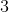
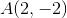
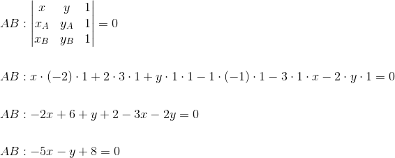
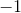
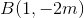

Aplicații ale determinanților
În această pagină a ghidului vom prezenta câteva aplicații ale determinanților de ordinul  în geometria plană, și anume ecuația unei drepte determinată de două puncte, condiția de coliniaritate a trei puncte în plan și aria unui triunghi.
Ecuația unei drepte determinată de două puncte
Fie punctele și  .
.
Atunci, ecuația dreptei determinată de cele două puncte date este:
 .
.
Exemplu:
Să se scrie ecuația dreptei determinată de următoarele puncte dintr-un plan:  și .
Rezolvare:
Avem formula de mai sus:
,
unde
Atunci,

Înmulțind cu  ultima relație obținută, vom avea:
.
Coliniaritatea a trei puncte în plan
Într-un plan, se dau punctele , și .
Atunci, punctele date sunt coliniare dacă și numai dacă avem că:
.
Exemple:
1. Să se verifice dacă punctele  , și sunt coliniare.
, și sunt coliniare.
Rezolvare:
Pentru a vedea dacă cele trei puncte date sunt coliniare, verificăm dacă:
,
unde
Atunci:
Rezultă că punctele  ,
,  și sunt coliniare.
și sunt coliniare.
2. Să se determine astfel încât punctele ,  și să fie coliniare.
Rezolvare:
Avem condiția de coliniaritate pentru punctele , și :
,
unde
Obținem:
Rezolvăm ecuația de gradul al II-lea de mai sus, folosind criteriul dat în pagina Definiție. Ecuația de gradul al II-lea, din cadrul ghidului Funcția de gradul al II-lea.
Calculăm  .
.
0 \end{align*}">

sau
Aria unui triunghi
În reperul cartezian  , considerăm trei puncte distincte , și . Atunci, aria triunghiului determinat de cele trei puncte, notată , este dată de formula:
, considerăm trei puncte distincte , și . Atunci, aria triunghiului determinat de cele trei puncte, notată , este dată de formula:
 ,
,
unde
.
Exemplu:
Să se calculeze aria triunghiului determinat de punctele  , și .
, și .
Rezolvare:
Conform celor de mai sus,
,
unde
,
cu
Atunci:
.